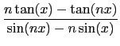
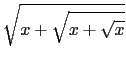
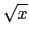
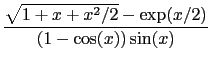

suivant: Limite et intégrale
monter: Limites
précédent: Limites
Table des matières
Index
Limites : limit limite
limit permet de calculer la limite d'une expression en un point fini (ou
infini). En utilisant un paramètre supplementaire, on peut indiquer si on
cherche une limite par valeurs supérieures ou par
valeurs inférieures (1 pour dire "par valeurs supérieures" et -1 pour dire
"par valeurs inférieures").
limit a trois ou quatre arguments :
une expression, le nom de la variable (par exemple x), le point limite
(par exemple a) et un argument optionnel qui indique si la limite est
unidirectionnelle ou bidirectionnelle (par défaut 0).
Cet argument est égal à
-1 pour une limite à gauche (x<a) ou est égal à 1
pour une limite à droite (x>a) ou à 0 pour une limite.
L'argument optionnel est donc utilisé lorsque l'on veut calculer une limite
à droite (+1) ou une limite à gauche (-1).
limit renvoie la limite demandée.
Remarque
On peut aussi mettre comme argument x=a à la place de x,a donc :
limit a aussi comme arguments une expression dépendant d'une variable,
une égalité (variable =la valeur où l'on veut calculer la limite) et
éventuellement 1 ou -1 pour indiquer la direction.
On tape :
limit(1/x,x,0,-1)
ou
limit(1/x,x=0,-1)
On obtient :
-(infinity)
On tape :
limit(1/x,x,0,1)
ou
limit(1/x,x=0,1)
On obtient :
+(infinity)
On tape :
limit(1/x,x,0,0)
ou
limit(1/x,x,0)
ou
limit(1/x,x=0)
On obtient :
infinity
cela veut dire que abs(1/x) tend vers +  quand x tend vers 0.
quand x tend vers 0.
Exercices :
- Trouver pour n > 2, la limite quand x tend vers 0 de :

On tape :
limit((n*tan(x)-tan(n*x))/(sin(n*x)-n*sin(x)),x=0)
On obtient :
2
- Trouver la limite quand x tend vers + de :
 - 
On tape :
limit(sqrt(x+sqrt(x+sqrt(x)))-sqrt(x),x=+infinity)
On obtient :
1/2
- Trouver la limite quand x tend vers 0 de :

On tape :
limit((sqrt(1+x+x^2/2)-exp(x/2))/((1-cos(x))*sin(x)),x,0)
On obtient :
-1/6
Pour calculer quelquefois des limites plus aisément, il peut être
judicieux de quoter le premier argument.
On tape par exemple :
limit('(2*x-1)*exp(1/(x-1))',x=+infinity)
On remarquera que l'on a quoté ici le premier argument pour qu'il ne soit
pas évalué c'est à dire pour qu'il ne soit pas simplifié.
On obtient :
+(infinity)
suivant: Limite et intégrale
monter: Limites
précédent: Limites
Table des matières
Index
Documentation de giac écrite par Renée De Graeve